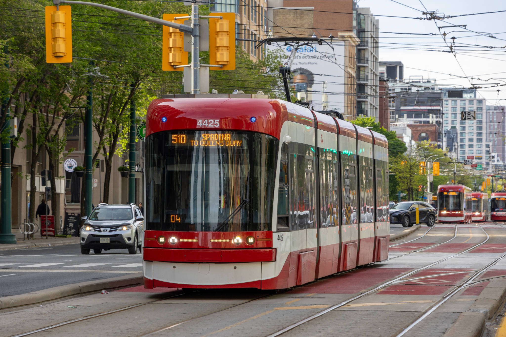
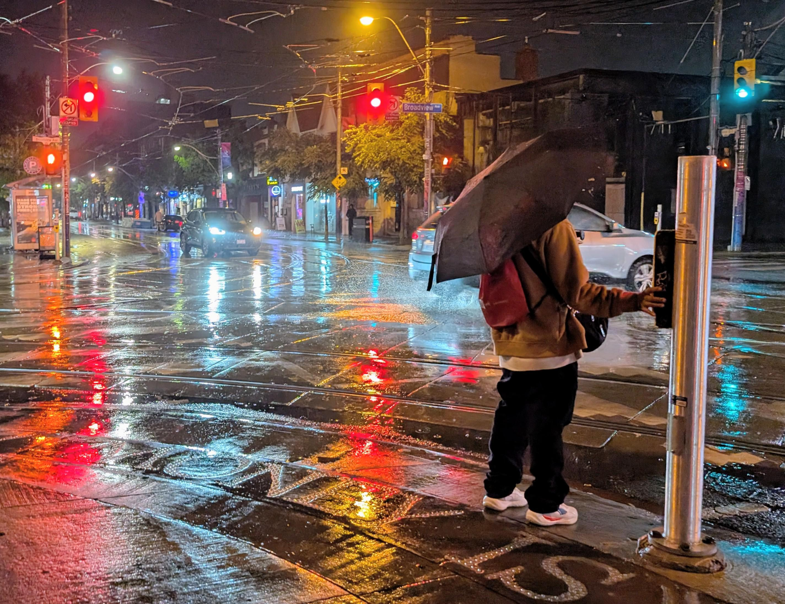

DESIGN WITH SOUND & VISION
One city.
Three moods.
A 75-second journey through Toronto — from morning birds to the busy downtown streets and a rainy evening.


AUDIO VISUALSCAPE
75 SECOND EXPERIENCE
SCENE 01 / 03
The city wakes.
Birdsong, fresh air, and a slow start to the morning.
MORNING · 00:00–00:25NOW PLAYING • TORONTO IN SOUND01:15 TOTAL
Sound of the cityMorning ambience
0:00
1:15
Press play or select a scene below. The visuals change with the audio.
EXPLORE THE SOUNDTRACK
Choose your scene
ABOUT THE PROJECT
Listening to
Toronto.
The soundscape tells a simple story: the city starts slowly, becomes busy, and winds down as the rain begins. The webpage mirrors these changes with animated images and an interactive audio timeline.